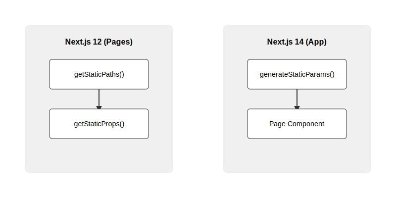

Static Generation with Dynamic Routes in Next.js 14
Introduction
Next.js 14 introduces a new way to generate static paths for dynamic routes at build time. This lesson covers:
- Understanding dynamic routes in Next.js
- Transitioning from getStaticPaths to generateStaticParams
- Configuring static exports
- Best practices and common pitfalls
Previous Approach: getStaticPaths (Pre-Next.js 13)
In Next.js 12 and earlier, you would use getStaticPaths to generate static paths for dynamic routes:
// pages/posts/[postId].js
export async function getStaticPaths() {
const response = await fetch('https://jsonplaceholder.typicode.com/posts');
const posts = await response.json();
const paths = posts.map((post) => ({
params: { postId: post.id.toString() },
}));
return { paths, fallback: false };
}
The getStaticPaths function was used in combination with getStaticProps to fetch and provide data for each path:
export async function getStaticProps({ params }) {
const response = await fetch(`https://api.example.com/posts/${params.postId}`);
const post = await response.json();
return { props: { post } };
}
New Approach: generateStaticParams (Next.js 13+)
Next.js 14 introduces a simpler approach using generateStaticParams:
// app/posts/[postId]/page.js
export async function generateStaticParams() {
const response = await fetch('https://jsonplaceholder.typicode.com/posts');
const posts = await response.json();
return posts.map((post) => ({
postId: post.id.toString(),
}));
}
// Example of complete page implementation
async function getPost(params) {
const response = await fetch(
`https://jsonplaceholder.typicode.com/posts/${params.postId}`
);
if (!response.ok) {
throw new Error('Failed to fetch post');
}
return response.json();
}
export default async function Post({ params }) {
const post = await getPost(params);
return (
<article>
<h1>{post.title}</h1>
<div>
<p>{post.body}</p>
</div>
</article>
);
}
Key differences from getStaticPaths:
- Simpler return format - just return the params object directly
- No need for separate getStaticProps function
- Works with the new App Router in Next.js 13+
- More intuitive API design
Important: With generateStaticParams:
- Data fetching is done directly in the page component
- Error handling should be implemented in the component
- The function runs at build time to generate static pages
- All specified routes will be pre-rendered as HTML
Visual Comparison
Here's a visual representation of how static route generation has evolved from Next.js 12 to Next.js 14:

Configuring Static Exports
To generate static HTML files for your dynamic routes, you need to configure static exports in your Next.js project:
// next.config.js
const nextConfig = {
output: 'export',
};
module.exports = nextConfig;
Important Configuration Notes:
- Setting output: 'export' tells Next.js to generate static HTML files during build
- The build process will create an 'out' directory containing all static assets
- All dynamic routes specified in generateStaticParams will be pre-rendered
- The static output can be deployed to any static hosting platform
After configuring, you can build your project with:
npm run build
This will generate the static files in the 'out' directory, ready for deployment.
Summary and Best Practices
Key Points to Remember:
- The generateStaticParams function pre-renders all dynamic routes at build time, improving performance and SEO
- If certain routes shouldn't be generated at build time, consider using fallback options or Server-Side Rendering (SSR)
- Always implement proper error handling in your page components
- Use TypeScript for better type safety in your dynamic parameters
Example of a complete implementation with fallback:
// app/posts/[postId]/page.js
export async function generateStaticParams() {
const posts = await fetch('https://api.example.com/posts').then(r => r.json());
return posts.map((post) => ({
postId: post.id.toString(),
}));
}
// Enable fallback for paths not generated at build time
export const dynamicParams = true;
export default async function Post({ params }) {
const post = await getPost(params);
if (!post) {
return <div>Loading...</div>; // Shown during fallback generation
}
return <article>{/* Post content */}</article>;
}